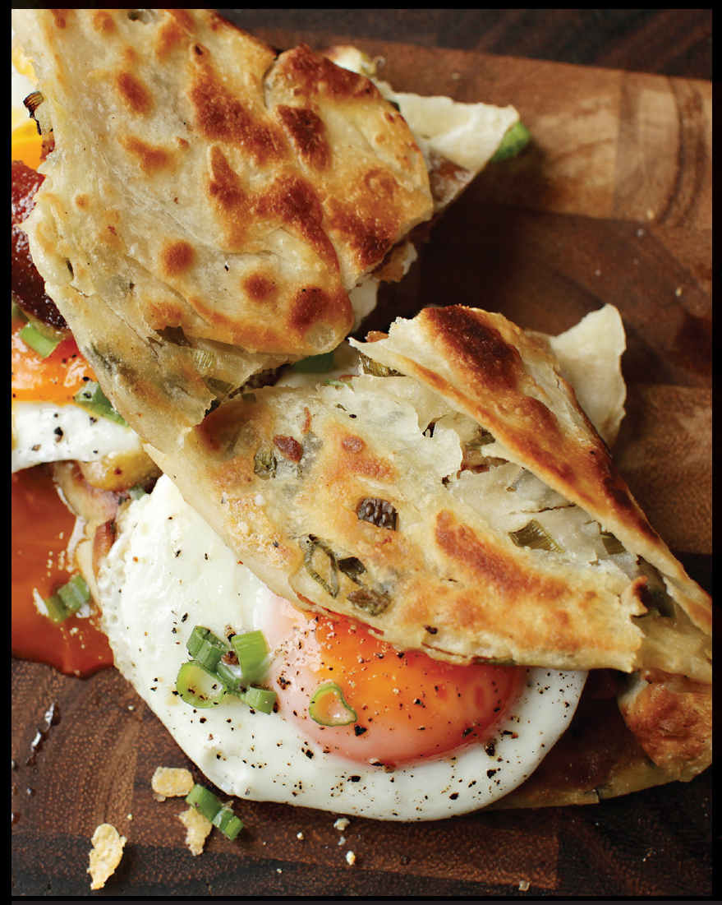
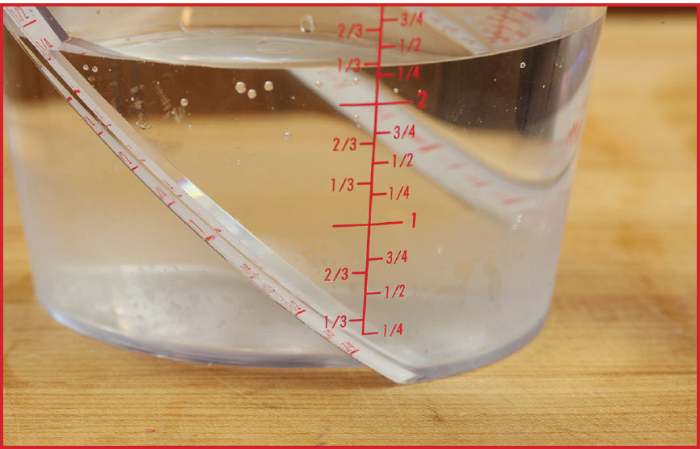
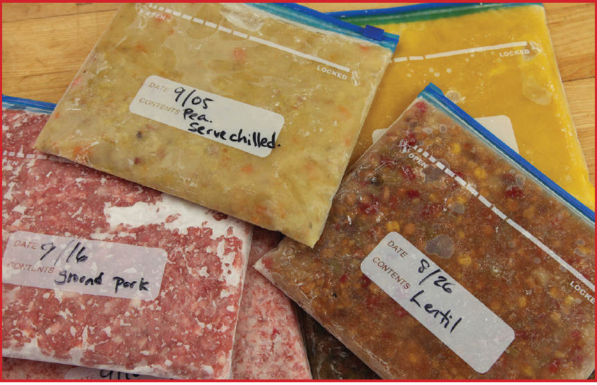
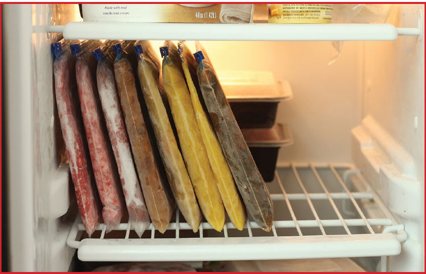

SCALLION PANCAKE BREAKFAST SANDWICHES
|
Yield Serves 2 |
Active Time 15 minutes Total Time 15 minutes |
INGREDIENTS
4 ounces (120 g) bacon, cut into ½-inch pieces
1 raw Chinese-Style Scallion Pancake (here)
3 ounces (90 g) Cheddar cheese, grated
1 tablespoon (15 g) unsalted butter
2 large eggs
Kosher salt and freshly ground black pepper
Flatbreads and pancakes folded or wrapped around various fillings is a breakfast staple throughout Taiwan and parts of China. Jianbing are thin crêpes filled with fried egg and brushed with hoisin sauce and chile oil. Scallion pancakes can come topped with a fried egg. In Los Angeles, Taiwanese immigrants stuffed laobing (the generic term for any flaky, layered, unleavened pancake or flatbread) with braised beef, cucumbers, and greens, creating what’s now known as the “Shandong beef roll.”
At Mei Mei in Boston, siblings Irene, Andrew, and Margaret Li use scallion pancakes as the vehicle for a wide range of sandwiches, including their “Double Awesome,” a scallion pancake brushed with pesto, layered with melted Cheddar cheese, then folded around a fried egg with a runny yolk.
For my scallion pancake breakfast sandwich, I like to add a bit of bacon to the mix, browning it in my wok, then using the rendered bacon fat to fry the pancakes.
Having a stack of thaw-and-cook pancakes in your freezer at all times makes this a quick and easy brunch or lunch item. You can freeze homemade raw scallion pancakes, but even store-bought frozen scallion pancakes can be truly excellent, and they cook directly from frozen (look for them in the freezer aisle of a good Asian supermarket).

DIRECTIONS
1 Heat the bacon in a wok over medium-high heat. Cook, stirring frequently, until the bacon is rendered and crisp, about 4 minutes. Use a slotted spoon to transfer the bacon to a small bowl.
2 Cook a scallion pancake in bacon fat, following the cooking instructions in step 5 of the Chinese-Style Scallion Pancake recipe (here), omitting the oil. After flipping the pancake, spread the cheese and bacon evenly over the top to melt while the second side cooks.
3 Meanwhile, melt the butter in a cast iron, carbon steel, or nonstick skillet over medium-high heat, swirling until the foaming subsides. Add the eggs and cook to the desired doneness, flipping them halfway through the cooking if desired. Season with salt and pepper.
4 Place one egg on each of the two quadrants on the right side of the pancake, then fold the left side of the pancake over the eggs. Slide the folded pancake with eggs out onto a cutting board, then cut in between the eggs with a sharp knife, separating the pancake into two triangular sandwiches. Serve immediately.
A Better, Faster, Easier Way to Freeze and Defrost Foods
Freezers are great for long-term storage, but they’re useful only when you can defrost food quickly with minimal loss of quality. So what’s the secret?
Well, time and air are the biggest enemies of frozen food. When food freezes slowly, large ice crystals form inside it. These jagged crystals can damage cell structure, which in turn causes the food to become mushy and wet after defrosting. Meanwhile, direct exposure to air leads to sublimation, which is the phase change from solid ice directly to gaseous water vapor that’s responsible for freezer burn. The key to better-quality frozen food is to minimize the time it takes for your food to freeze and defrost, which means freezing flat to maximize the ratio of surface area to volume.
The shape in which you freeze your food makes a remarkable difference. To demonstrate this, I froze two separate containers, each holding a quart of water. I froze one quart in a cylindrical deli container and the other flat in a zipper-lock bag. I then placed both on the counter and let them defrost for 45 minutes. After 45 minutes, I poured out the melted water.


The ice frozen as a cylinder produced less than a cup of water. Meanwhile, the ice frozen flat produced over two cups. That’s right: It defrosted more than twice as fast (and, conversely, it also froze more than twice as fast)! This can make a huge difference not just for the quality of your food, but also for convenience.
HOW TO FREEZE FOODS FLAT


For each of these methods, be sure to use a zipper-lock bag that’s specifically labeled as a freezer bag, since regular zipper-lock bags are made of thinner-gauge plastic that is actually air-permeable and will not prevent freezer burn over time.
For Semisolids, Like Ground Meat and Stews
To freeze malleable solids and semisolids, like ground meat or a thick sauce, transfer your food to a zipper-lock bag. The easiest and neatest way to do this is to first label your bag with the date and the food you’re going to put inside using a permanent marker. Flip the lip of the bag inside out, so that you can add food to it without the risk of getting gunk in the zipper seal. Once the bag is full, unfold the lip and seal the bag most of the way, leaving about an inch unsealed. Then squeeze out as much air as you can, working from the bottom corner opposite the opening, up toward the open seal. Once all the air is pushed out, seal up the bag, then push the contents into a flat layer. Place it on a small rimmed aluminum baking sheet and transfer it to the freezer, making sure it stays flat until it’s completely frozen solid.
For Liquids, Like Soup and Stock
To store liquids, label your bag, then, starting with the bag upright, fold the edge over to give it stability (if you have a conveniently sized container, you can place the bag in the container and fold the lip over the edge of the container to keep it even more stable), and pour the liquid in. Again, seal all but an inch of the bag, then slowly lay the bag out flat, pushing the air toward the opening in the seal as you do. Seal the bag just as the last of the air escapes, transfer to a small rimmed aluminum baking sheet and freeze.
The other nice thing about freezing flat is that it helps you keep your freezer organized. Once frozen, the bags can be stacked on top of each other, or, if you prefer, stored sideways, LP record style, allowing you to flip through with ease.
For Firm Solids, Like Chicken Pieces or Steaks
Firm foods, like steaks, shrimp, and chicken pieces, may not freeze truly flat, so your best bet is to arrange them in a single layer, then remove the air from the bags. You can, of course, use a vacuum sealer, but those bags are pricey, and not everyone has a vacuum sealer at home. Instead, you can use a regular zipper-lock freezer bag, some water, and a technique called the water displacement method.
To do it, label your bag, then place your food inside and partially seal the bag, leaving just the last inch or so of the seal open. Next, lower the bag into a pot or a tub of water. As the bag is lowered, water pressure will push air out of it through the small opening you’ve left. Just before the bag is completely submerged, seal off that opening and pull the whole bag out of the tub. (And don’t waste the water! It’s perfectly safe to use for cooking or watering the garden.)
For Better Defrosting, Use Aluminum
When it comes time to defrost your food, transferring it to the fridge for a night works, but what if you’re in a hurry? Running it under cold water in the sink is often recommended, but, at least where I live, water is a scarce resource, so I prefer another option: an aluminum tray.
Aluminum is one of the best conductors of heat in your kitchen. It’s great at heating food quickly and evenly (that’s why tri-ply pans have an aluminum core), but it’s also great at channeling heat from the air into your defrosting food. I placed two identical frozen steaks on my counter, one on a wooden cutting board and the other on an aluminum tray. The one on the tray defrosted in less than half the time needed for the one on the cutting board. That’s good news for quality and for safety, not to mention for your busy schedule.
The aluminum trick works equally well with foods frozen flat as it does with firmer foods, like steak, chops, fish, and shrimp—basically anything you’ve got that needs defrosting, including those scallion pancakes.